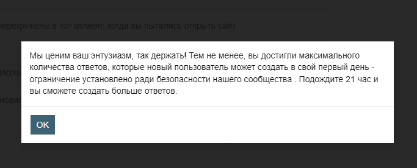

| Ник |
Пост |
Дата |
| lynrayy(Lynrayy) |
- Тип настройки: браузерное расширение, а так же VPN
- Тип проблемы: не работают все заблокированные сайты
- Что с сайтом: получаете ошибку в браузере: На прокси-сервере возникла проблема или адрес указан неверно.
- Используемый браузер: Google Chrome
Не открываются сайты, не грузятся аватарки на ютубе (вчера всё работало). Пробовал включть “Использовать WARP как прокси” - не помогло, расширение не работает. OpenVPN подключается к прокси, но сайты так же не открываются. Журнал OpenVPN
2022-07-25 16:10:10 DEPRECATED OPTION: --cipher set to 'AES-128-CBC' but missing in --data-ciphers (AES-256-GCM:AES-128-GCM). Future OpenVPN version will ignore --cipher for cipher negotiations. Add 'AES-128-CBC' to --data-ciphers or change --cipher 'AES-128-CBC' to --data-ciphers-fallback 'AES-128-CBC' to silence this warning.
2022-07-25 16:10:10 OpenVPN 2.5.5 Windows-MSVC [SSL (OpenSSL)] [LZO] [LZ4] [PKCS11] [AEAD] built on Dec 15 2021
2022-07-25 16:10:10 Windows version 10.0 (Windows 10 or greater) 64bit
2022-07-25 16:10:10 library versions: OpenSSL 1.1.1l 24 Aug 2021, LZO 2.10
2022-07-25 16:10:11 TCP/UDP: Preserving recently used remote address: [AF_INET]51.75.75.245:1194
2022-07-25 16:10:11 Attempting to establish TCP connection with [AF_INET]51.75.75.245:1194 [nonblock]
2022-07-25 16:10:11 TCP connection established with [AF_INET]51.75.75.245:1194
2022-07-25 16:10:11 TCP_CLIENT link local: (not bound)
2022-07-25 16:10:11 TCP_CLIENT link remote: [AF_INET]51.75.75.245:1194
2022-07-25 16:10:12 [antizapret-server] Peer Connection Initiated with [AF_INET]51.75.75.245:1194
2022-07-25 16:10:13 open_tun
2022-07-25 16:10:13 tap-windows6 device [OpenVPN TAP-Windows6] opened
2022-07-25 16:10:13 Set TAP-Windows TUN subnet mode network/local/netmask = 192.168.112.0/192.168.114.170/255.255.248.0 [SUCCEEDED]
2022-07-25 16:10:13 Notified TAP-Windows driver to set a DHCP IP/netmask of 192.168.114.170/255.255.248.0 on interface {4ED8900F-48AC-4AA1-A4B5-00FFD13CC1C3} [DHCP-serv: 192.168.112.0, lease-time: 31536000]
2022-07-25 16:10:13 Successful ARP Flush on interface [10] {4ED8900F-48AC-4AA1-A4B5-00FFD13CC1C3}
2022-07-25 16:10:13 IPv4 MTU set to 1500 on interface 10 using service
2022-07-25 16:10:13 Blocking outside dns using service succeeded.
2022-07-25 16:10:18 WARNING: this configuration may cache passwords in memory -- use the auth-nocache option to prevent this
2022-07-25 16:10:18 Initialization Sequence Completed
| 2022-07-25T13:16:17.115Z |
| lynrayy(Lynrayy) | UPD:
Отключил расширение, сайты заработали в режиме включенного OpenVPN
Вывод - что то не так с расширением | 2022-07-25T13:18:26.216Z |
| ValdikSS |
Видимо, прокси были перегружены в тот момент, когда вы пытались открыть сайт.
А WARP при этом установили и настроили? | 2022-07-25T15:40:45.035Z |
| kaisd(kaisd) | Пришлось создать новый аккаунт что бы ответить.

Не думал что варп надо устанавливать для этого. В любом случае даже с отключенной настройкой варпа не работало,
А вот сам варп… Он у меня и сам по себе не работает (Ростелеком, Москва). Получается варп и так и сяк не заработал бы
P.s кажется сейчас расширение работает | 2022-07-25T15:48:38.351Z |
| CRACKen(panic!("this is a terrible mistake!");) | Да, для работы прокси через WARP нужно произвести настройку самого WARP.
У расширения есть официальное wiki, где можно ознакомиться с руководством.
Вики | 2022-07-25T16:25:31.369Z |